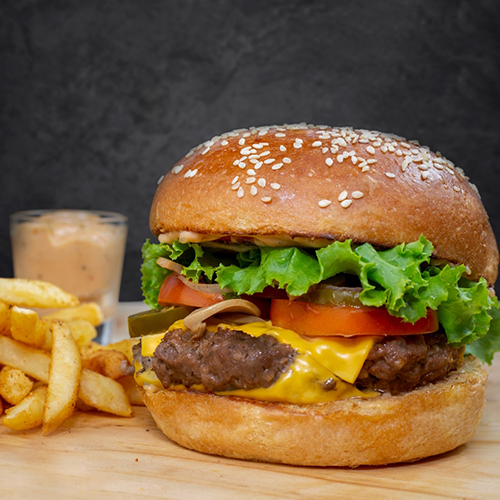

Home
Bang Bang Burger Recipe

Description
Chicken burgers are notoriously dry, but not anymore! Adding minced roasted mushrooms to ground chicken not only
adds extra moisture, it gives a deep umami flavor that even beef lovers will drool over. A little more
time-intensive than a regular burger, this version is oozing with flavor and well worth the extra
effort–crunchy, tangy, sweet, savory and juicy, all in one burger. The jalapeños aren't spicy because they are
seeded, but if you want an extra kick, leave the seeds in. Save time by making the sauce, slaw and patties ahead
of time.
Ingredients
Pickled vegetable slaw:
- 3/4 cup rice vinegar
- 2 tablespoons water
- 2 teaspoons sesame seeds
- 1 small carrot, cut into matchsticks
- 1/4 large English cucumber, cut into matchsticks
- 1/4 small red onion, thinly sliced
Bang Bang sauce:
- 1/2 cup mayonnaise
- 1/4 cup Thai sweet chili sauce
- 2 teaspoons Sriracha, or more to taste
- 1 teaspoon rice vinegar
- 1/8 teaspoon salt
Burgers:
- 1 (8 ounce) package crimini mushrooms, halved or quartered
- 6 tablespoons peanut oil, divided
- 1 pound ground chicken, white and dark meat
- 1 1/4 teaspoons salt
- 4 jalapeño peppers, halved and seeded
- 8 green onions, ends trimmed and onions cut in half crosswise
- 4 brioche buns, split
- 2 large eggs
- 2 tablespoons water
- 1 1/2 cups panko bread crumbs
- 2 tablespoons minced cilantro
Directions:
Step 1
- Whisk together 3/4 cups rice vinegar, water, sugar, and sesame seeds in a small bowl until sugar is dissolved. Add
carrot, cucumber, and red onion, separating onion layers; toss to coat. Chill until ready to use, stirring
occasionally to keep vegetables submerged in the brine.
Step 2
- Whisk together mayonnaise, Thai sweet chile sauce, Sriracha, 1 teaspoon rice vinegar, and 1/4 teaspoon salt in a
small bowl. Chill Bang Bang Sauce until ready to use.
Step 3
- Preheat the oven to 400 degrees F (200 degrees C). Line a rimmed baking sheet with aluminum foil.
Step 4
- Toss mushrooms with 1 tablespoon oil. Spread mushrooms out in a single layer on the prepared baking sheet. Roast
mushrooms in the preheated oven for 15 minutes, stirring halfway through. Remove from oven and allow to cool.
Step 5
- Transfer cooked mushrooms to a food processor,pulsing 5 or 6 times and scraping down the sides of the bowl, until
finely minced (or mince with a knife). Combine mushrooms, ground chicken, and 1 1/4 teaspoons salt in a bowl;
mix thoroughly, without overmixing. Form into 4 patties, about the circumference of the brioche buns, and
place on squares of parchment paper or plastic wrap to prevent from sticking. You can oil your hands to handle
meat if mixture is sticky. Refrigerate for at least 30 minutes for the patties to firm up.
Step 6
- When ready to cook the burgers, set an oven rack about 6 inches from the heat source and preheat the oven's
broiler. Place jalapeño halves, cut side down, and green onions on a baking sheet. Drizzle with 1 teaspoon oil.
Step 7
- Broil vegetables until charred, turning halfway through, about 10 minutes. Set aside.
Step 8
- Meanwhile, preheat a large cast iron skillet over medium-high heat. Brush skillet with 1 teaspoon oil and toast
brioche buns, cut side down, until lightly browned, 2 to 4 minutes; set aside.
Step 9
- Lightly whisk eggs and water in a shallow dish. Add panko bread crumbs to a second dish. Gently dip burger patties
into egg mixture, letting excess drip off. Press lightly into bread crumbs to coat both sides.
Step 10
- Heat remaining oil in a cast iron skillet over medium heat. Fry burgers until internal temperature reaches 165
degrees F (74 degrees C), about 3 minutes per side. Place patties on a plate lined with paper towels.
Step 11
- Spread a light layer of Bang Bang sauce on bottom buns. Add 2 charred jalapeño halves per bun. Add chicken patty
and top with slaw and charred scallions. Top with cilantro and drizzle with more sauce.
Enjoy your meal!
Original Recipe